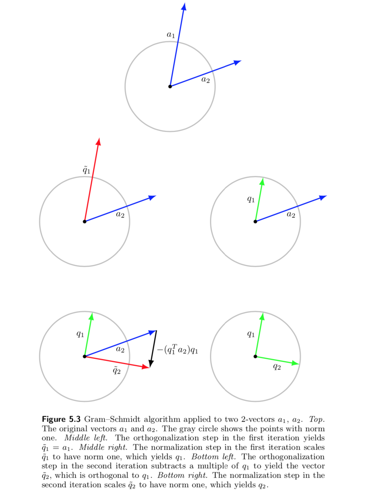
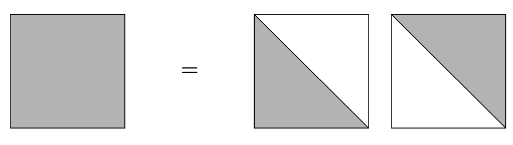
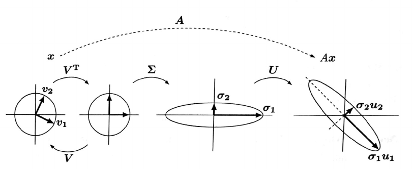

부록 C — 행렬의 분해
C.1 Gram–Schmidt 방법
서로 독립인 \(n\)차원의 벡터들이 \(p\)개 있을떄 \[ \pmb a_1, \pmb a_2, \dots, \pmb a_p \] 이들이 만드는 열공간을 \(C\) 라고 하자.
\[ \begin{aligned} C &= span \{ \pmb a_1, \pmb a_2, \dots, \pmb a_p \} \notag \\ & = \{~c_1 \pmb a_1 +c_2 \pmb a_2+\dots+c_p \pmb a_p ~|~ \text{ all possible real values of } c_1,c_2, \dots ,c_p ~\} \end{aligned} \tag{C.1}\]
이제 우리는 위와 동일한 열공간 \(C\) 만드는 정규직교 벡터들을 찾는 방법을 알아보고자 한다.
\[ \pmb q_1, \pmb q_2, \dots, \pmb q_p \quad \text{ where } \pmb q_i^t \pmb q_j = 0,~~ \pmb q_i^t \pmb q_i = 1 \]
그리고
\[ C = span \{ \pmb q_1, \pmb q_2, \dots, \pmb q_p \} = span \{ \pmb a_1, \pmb a_2, \dots, \pmb a_p \} \tag{C.2}\]
이제 앞 절의 벡터의 사영에 대한 결과를 사용하여 다음과 같은 직교하는 \(p\) 개의 벡터들을 축차적으로 만들어 보자.
\[ \begin{aligned} \tilde {\pmb q}_1 & = \pmb a_1 \notag \\ \tilde {\pmb q}_2 & = \pmb a_2 - proj_{\tilde {\pmb q}_1} (\pmb a_2) \notag \\ \tilde {\pmb q}_3 & = \pmb a_3 - proj_{\tilde {\pmb q}_1} (\pmb a_3) -proj_{\tilde {\pmb q}_2} (\pmb a_3) \notag \\ \tilde {\pmb q}_4 & = \pmb a_4 - proj_{\tilde {\pmb q}_1} (\pmb a_4) -proj_{\tilde {\pmb q}_2} (\pmb a_4) -proj_{\tilde {\pmb q}_3} (\pmb a_4) \notag \\ & \dots \notag \\ \tilde {\pmb q}_p &= \pmb a_p - \sum_{k=1}^p proj_{\tilde {\pmb q}_k} (\pmb a_p) \end{aligned} \tag{C.3}\]
축차적으로 만든 벡터들을 정규벡터로 만들면 원래의 벡터들 \(\pmb a_1, \pmb a_2, \dots, \pmb a_p\)이 생성하는 동일한 열공간을 만드는 정규직교 벡터 \(\pmb q_1, \pmb q_2, \dots, \pmb q_p\)를 만들 수 있다.
\[ \pmb q_i = \tilde {\pmb q}_i / \norm{\tilde {\pmb q}_i}, \quad i=1,2,\dots,p \tag{C.4}\]
Gram–Schmidt 방법으로 만든 벡터들이 직교하는 것은 다음과 같이 증명할 수 있다. 먼저 ?eq-proofortho 에 의하여 \(\tilde {\pmb q}_1\) 과 \(\tilde {\pmb q}_2\)는 직교한다. 이제 임의의 \(i\)에 대하여 \(\tilde {\pmb q}_1, \tilde {\pmb q}_2, \cdots, \tilde {\pmb q}_{i-1}\) 벡터들이 직교한다고 가정하자. 모든 \(1 \le j \le i-1\) 에 대하여
\[ \begin{aligned} \tilde {\pmb q}^t_{j} \tilde {\pmb q}_{i} & = \tilde {\pmb q}^t_{j} \left [ \pmb a_i - \sum_{k=1}^{i-1} proj_{\tilde {\pmb q}_k} (\pmb a_i) \right ]\\ & = \tilde {\pmb q}^t_{j} \left [ \pmb a_i -proj_{\tilde {\pmb q}_j} (\pmb a_i) \right ] - \left [ \sum_{\substack{1\le k \le i-1 \\ k \ne j}} \tilde {\pmb q}^t_{j} ~proj_{\tilde {\pmb q}_k} (\pmb a_i) \right ] \\ & = 0 + 0 \end{aligned} \]
위에서 마지막 단계의 직교성은 다음과 같은 사실로 부터 유도된다.
\(\pmb a_i -proj_{\tilde {\pmb q}_j} (\pmb a_i)\)는 \(\tilde {\pmb q}^t_{j}\)와 직교한다.
가정에 의하여 \(\tilde {\pmb q}_1, \tilde {\pmb q}_2, \cdots, \tilde {\pmb q}_{i-1}\) 는 직교하고 \(proj_{\tilde {\pmb q}_k }(\pmb a_i)\) 는 \(\tilde {\pmb q}_{k}\) 와 같은 방향을 가진다.
\[ \tilde {\pmb q}^t_{j} proj_{\tilde {\pmb q}_k} (\pmb a_i) =0 \quad \text{ for } 1 \le j,k \le i-1 , k \ne j \]
식 C.3 과 식 C.4 의 알고리즘을 Gram–Schmidt 방법이라고 부른다. 위의 두 식에 의한 알고리즘을 다음과 같은 사실을 이용하면 좀 더 간단한 방법의 알고리즘이 나온다.
\[ proj_{\tilde {\pmb q}_k} (\pmb a_l) = \frac{\pmb a_l^t \tilde {\pmb q}_k} {\tilde {\pmb q}_k^t \tilde {\pmb q}_k} \tilde {\pmb q}_k = \frac{\pmb a_l^t \tilde {\pmb q}_k} {\norm{\tilde {\pmb q}_k}^2} \tilde {\pmb q}_k= (\pmb a_l^t \pmb q_k) \pmb q_k \]
\(p\)개의 벡터 \(\pmb a_1, \pmb a_2, \dots, \pmb a_p\)에 대하여
for \(i=1,2,\dots,p\)
\(\tilde {\pmb q}_i = \pmb a_i - (\pmb q_1^t \pmb a_i) \pmb q_1 - \dots - (\pmb q_{i-1}^t \pmb a_i) \pmb q_{i-1}\) (직교화)
\(\pmb q_i = \tilde {\pmb q}_i/ \norm{\pmb q_i}\) (정규화)
다음은 Gram–Schmidt 방법을 설명한 그림이다.
C.2 LU 분해
정방행렬 \(\pmb A\)를 다음과 같이 하삼각행렬 \(\pmb L\)과 상삼각행렬 \(\pmb U\)의 곱으로 나타내는 것을 LU 분해라고 한다.
\[ \pmb A = \pmb L \pmb U \]

이러한 LU 분해는 행렬 \(\pmb A\)에 행연산을 적용하여 쉽게 구할 수 있다. 예를 들어 위에서 고려한 \(2 \times 2\) 행렬에 행연산을 적용하여 대각원소 아래를 0으로 만들면 LU 분해를 쉽게 유도할 수 있다.
\[ \begin{bmatrix} 1 & 0\\ -3 & 1 \end{bmatrix} \begin{bmatrix} 1 & 2 \\ 3 & 4 \end{bmatrix} = \begin{bmatrix} 1 & 2\\ 0 & -2 \end{bmatrix} \]
따라서
\[ \begin{bmatrix} 1 & 2 \\ 3 & 4 \end{bmatrix} = \begin{bmatrix} 1 & 0\\ 3 & 1 \end{bmatrix} \begin{bmatrix} 1 & 2\\ 0 & -2 \end{bmatrix} = \pmb L \pmb U \]
C.3 QR 분해
식 C.3 과 식 C.4 에 주어진 Gram–Schmidt 방법을 원래 벡터들 \(\pmb a_1, \pmb a_2, \dots, \pmb a_p\)에 대하여 다시 다음과 같이 나타낼 수 있다.
\[ \begin{aligned} \pmb a_1 & = \tilde {\pmb q}_1 \\ &= \norm{\tilde {\pmb q}_1} \pmb q_1 \\ \pmb a_2 & = \tilde {\pmb q}_2 + proj_{\tilde {\pmb q}_1} (\pmb a_2) \\ & = \tilde {\pmb q}_2 + \frac{\pmb a^t_2 \tilde {\pmb q}_1}{\tilde {\pmb q}^t_1 \tilde {\pmb q}_1} \tilde {\pmb q}_1 \\ &= (\pmb a^t_2 {\pmb q}_1) {\pmb q}_1 + \norm{\tilde {\pmb q}_2} {\pmb q}_2 \\ \pmb a_3 & = \tilde {\pmb q}_3 + proj_{\tilde {\pmb q}_1} (\pmb a_3) + proj_{\tilde {\pmb q}_2} (\pmb a_3) \\ & = \tilde {\pmb q}_3 + \frac{\pmb a^t_3 \tilde {\pmb q}_1}{\tilde {\pmb q}^t_1 \tilde {\pmb q}_1} \tilde {\pmb q}_1 +\frac{\pmb a^t_3 \tilde {\pmb q}_2}{\tilde {\pmb q}^t_2 \tilde {\pmb q}_2} \tilde {\pmb q}_2 \\ &= (\pmb a^t_3 {\pmb q}_1) {\pmb q}_1 + (\pmb a^t_3 {\pmb q}_2) {\pmb q}_2+ \norm{\tilde {\pmb q}_3} {\pmb q}_3 \\ & \cdots \\ \pmb a_p & = (\pmb a^t_p {\pmb q}_1) {\pmb q}_1 + (\pmb a^t_p {\pmb q}_2) {\pmb q}_2+ \dots + (\pmb a^t_p {\pmb q}_{p-1}) {\pmb q}_{p-1} +\norm{\tilde {\pmb q}_p} {\pmb q}_p \end{aligned} \]
즉 위의 축차식을 보면 원래 벡터 \(\pmb a_i\) 는 Gram–Schmidt 방법으로 구한 정규직교벡터 \(\pmb q_1,\pmb q_2, \dots, \pmb q_p\) 의 선형 조합으로 나타낼 수 있다.
이제 Gram–Schmidt 방법으로 구한 정규직교벡터들 \(\pmb q_1, \pmb q_2, \dots, \pmb q_p\) 을 모아놓은 행렬을 \(\pmb Q\) 라고 하고 위에서 \(\pmb a_i\)들이 직교행렬의 선형조합으로 표시될때 계수들을 모아놓는 상삼각행렬을 \(\pmb R\) 이라고 하자. 그려면 다음과 같은 QR 분해가 주어진다.
\[ \pmb A = \pmb Q \pmb R \tag{C.5}\]
여기서
\[ \begin{aligned} \pmb Q & = [\pmb q_1~~ \pmb q_2 ~ \dots ~\pmb q_p ], \quad \pmb Q^t \pmb Q =\pmb I \\ & \\ \pmb R & = \begin{bmatrix} \norm{\tilde {\pmb q}_1} & \pmb a^t_2 {\pmb q}_1 & \pmb a^t_3 {\pmb q}_1 & \dots & \pmb a^t_p {\pmb q}_1 \\ 0 & \norm{\tilde {\pmb q}_2} & \pmb a^t_3 {\pmb q}_2 & \dots & \pmb a^t_p {\pmb q}_2 \\ 0 & 0 & \norm{\tilde {\pmb q}_3} & \dots & \pmb a^t_p {\pmb q}_3 \\ & & & \dots & \\ 0 & 0 & 0 & \dots & \norm{\tilde {\pmb q}_p} \end{bmatrix} \end{aligned} \]
이제 Gram–Schmidt 방법과 QR 분해를 실제 예제를 통하여 구해보자
아래와 같이 4차원 벡터 3개가 있다.
\[ \pmb a_1 = \begin{bmatrix} -1 \\ 1 \\ -1 \\ 1 \end{bmatrix} \quad \pmb a_2 = \begin{bmatrix} -1 \\ 3 \\ -1 \\ 3 \end{bmatrix} \quad \pmb a_3 = \begin{bmatrix} 1 \\ 3 \\ 5 \\ 7 \end{bmatrix} \tag{C.6}\]
위의 벡터 \(\pmb a_1 , \pmb a_2 , \pmb a_3\)에 대하여 Gram–Schmidt 방법을 적용해보자.
- \(i=1\). 먼저 \(\norm{\tilde {\pmb q}_1}= \norm{\pmb a_1}=2\)이므로 첫번째 벡터 \(\pmb q_1\)를 만든다.
\[ \pmb q_1 = \tilde {\pmb q}_1 / \norm{\tilde {\pmb q}_1} = \begin{bmatrix} -1/2 \\ 1/2 \\ -1/2 \\ 1/2 \end{bmatrix} \]
- \(i=2\). 이제 두번째 직교벡터 \(\pmb q_2\)를 만들자. \(\pmb q^t_1 \pmb a_2 =4\)이므로
\[ \tilde {\pmb q_2} = \pmb a_2 -(\pmb q_1^t \pmb a_2) \pmb q_1 = \begin{bmatrix} -1 \\ 3 \\ -1 \\ 3 \end{bmatrix} -4 \begin{bmatrix} -1/2 \\ 1/2 \\ -1/2 \\ 1/2 \end{bmatrix} = \begin{bmatrix} 1 \\ 1 \\ 1 \\ 1 \end{bmatrix} \]
그리고 \(\norm{\tilde {\pmb q}_2} = 2\)이므로
\[ \pmb q_2 = \tilde {\pmb q}_2/\norm{\tilde {\pmb q}_2} = \begin{bmatrix} 1/2 \\ 1/2 \\ 1/2 \\ 1/2 \end{bmatrix} \]
- \(i=3\) 마지막으로 \(\pmb q_1^t \pmb a_3 =2\), \(\pmb q_2^t \pmb a_3=8\) 이므로
\[ \tilde {\pmb q_3} = \pmb a_3 -(\pmb q_1^t \pmb a_3) \pmb q_1 -(\pmb q_2^t \pmb a_3) \pmb q_2= \begin{bmatrix} 1 \\ 3 \\ 5 \\ 7 \end{bmatrix} -2 \begin{bmatrix} -1/2 \\ 1/2 \\ -1/2 \\ 1/2 \end{bmatrix} -8 \begin{bmatrix} 1/2 \\ 1/2 \\ 1/2 \\ 1/2 \end{bmatrix} = \begin{bmatrix} -2 \\ -2\\ 2 \\ 2 \end{bmatrix} \] 또한 \(\norm{\tilde {\pmb q}_3} = 4\)이므로
\[ \pmb q_3 = \tilde {\pmb q}_3/\norm{\tilde {\pmb q}_3} = \begin{bmatrix} -1/2 \\ -1/2 \\ 1/2 \\ 1/2 \end{bmatrix} \]
따라서 Gram–Schmidt 방법으로 만든 정규직교벡터는 다음과 같다.
\[ \pmb q_1 = \begin{bmatrix} -1/2 \\ 1/2 \\ -1/2 \\ 1/2 \end{bmatrix} \quad \pmb q_2 = \begin{bmatrix} 1/2 \\ 1/2 \\ 1/2 \\ 1/2 \end{bmatrix} \quad \pmb q_3 = \begin{bmatrix} -1/2 \\ -1/2 \\ 1/2 \\ 1/2 \end{bmatrix} \]
이제 위에서 구한 Gram-Schmidt 방법으로 얻은 결과를 이용하여 QR 분해를 구해보자.
식 C.6 에서 주어진 백터들을 열로 가진 행렬 \(\pmb A\)의 QR분해를 구해보자.
\[ \pmb A = \begin{bmatrix} -1 & -1 & 1 \\ 1 & 3 & 3 \\ -1 & -1 & 5 \\ 1 & 3 & 7 \end{bmatrix} \]
앞의 예제에서 구한 직교벡터를 그대로 이용하면 \(\pmb Q\)는 쉽게 구해진다.
\[ \pmb Q = \begin{bmatrix} -1/2 & 1/2 & -1/2 \\ 1/2 & 1/2 & -1/2 \\ -1/2 & 1/2 & 1/2 \\ 1/2 & 1/2 & 1/2 \end{bmatrix} \]
또한 식 C.5 에 주어진 공식을 이용하면 행렬 \(\pmb R\)은 다음과 같이 구할 수 있다.
\[ \pmb R = \begin{bmatrix} \norm{\tilde {\pmb q}_1} & \pmb a^t_2 {\pmb q}_1 & \pmb a^t_3 {\pmb q}_1 \\ 0 & \norm{\tilde {\pmb q}_2} & \pmb a^t_3 {\pmb q}_2 \\ 0 & 0 & \norm{\tilde {\pmb q}_3} \end{bmatrix} = \begin{bmatrix} 2 & 4 & 2 \\ 0 & 2 & 8 \\ 0 & 0 & 4 \end{bmatrix} \]
C.4 SVD 분해
C.4.1 특이값과 특이벡터
고유값과 고유벡터는 정방행렬인 경우 정의되는 것으로서 행렬이 정방행렬이 아닌 경우에는 구할 수 없다. 이제 고유값과 유사한 성질을 가지는 특이값을 일반행렬에서 정의해보자.
\(\pmb A\)가 \(m \times n\) 일반행렬이라고 가정하고 그 계수 \(r\)이라고 하자 (\(r(\pmb A)=r\)). 이제 서로 직교하는 \(n\)-차원의 벡터들의 집합 \(\pmb v_1, \pmb v_2, \dots, \pmb v_n\)과 다른 직교하는 \(m\)-차원의 벡터들의 집합 \(\pmb u_1, \pmb u_2, \dots, \pmb u_m\)을 생각하자.
행렬 \(\pmb A\)의 특이값(singular values) \(\sigma_1 \ge \sigma_2 \ge \dots \ge \sigma_r>0\)과 왼쪽 특이벡터(left singular vectors) \(\pmb u_1, \pmb u_2, \dots, \pmb u_m\) 그리고 오른쪽 특이벡터(right singular vectors) \(\pmb v_1, \pmb v_2, \dots, \pmb v_n\) 는 다음과 같은 성질을 만족한다.
\[ \pmb A \pmb v_1 = \sigma_1 \pmb u_1, \quad \pmb A \pmb v_2 = \sigma_2 \pmb u_2, \quad \dots \quad \pmb A \pmb v_r = \sigma_r \pmb u_r, \quad \pmb A \pmb v_{r+1} = \pmb 0 , \quad \dots, \quad \pmb A \pmb v_n = \pmb 0 \tag{C.7}\]
\(n \times n\) 정방행렬 \(\pmb V\)와 \(m \times m\) 정방행렬 \(\pmb U\) 를 각각 서로 직교하는 정규벡터 \(\pmb v_1, \pmb v_2, \dots, \pmb v_n\) 과 \(\pmb u_1, \pmb u_2, \dots, \pmb u_m\) 으로 구성되는 직교행렬이라고 하자.
\[ \pmb V = [\pmb v_1~ \pmb v_2~ \dots~ \pmb v_n], \quad \pmb U = [\pmb u_1 ~ \pmb u_2 ~ \dots ~ \pmb u_m ] \]
식 C.7 에 나타난 관계를 행렬 \(\pmb V\)와 \(\pmb U\)로 나타내면 다음과 같이 표현할 수 있다.
\[ \pmb A \pmb V = \pmb U \pmb \Sigma \tag{C.8}\]
위에서 \(m \times n\) 행렬 \(\pmb \Sigma\)는 다음과 같은 형태를 가진다.
\[ \pmb \Sigma =\begin{bmatrix} \pmb \Sigma_r & \pmb 0 \\ \pmb 0 & \pmb 0 \end{bmatrix}, \quad \pmb \Sigma_r = \begin{bmatrix} \sigma_1 & & 0 & \\ & \sigma_2 & & \\ & & \ddots & \\ & 0 & & \sigma_r \end{bmatrix} \]
C.4.2 SVD 분해
이제 행렬 \(\pmb V\)가 직교행렬을 이용하면 다음과 같은 SVD 분해(singular value decomposition; 특이값 분해)을 정의할 수 있다.
\[ \underset{m \times n}{ \pmb A} = \underset{m \times m}{\pmb U} ~~\underset{m \times n}{\pmb \Sigma}~~ \underset{n \times n}{\pmb V^t} \tag{C.9}\]
위의 식 C.9 을 전개하면 다음과 같이 계수가 1인 행렬 \(\pmb u_k \pmb v_k^t\) 들의 선형조합으로 행렬 \(\pmb A\)를 나타낼 수 있다.
\[ \pmb A = \sigma_1 \pmb u_1 \pmb v_1^t + \sigma_2 \pmb u_2 \pmb v_2^t + \dots \sigma_r \pmb u_r \pmb v_r^t \tag{C.10}\]
또한 식 C.8 에서 \(\pmb \Sigma\)에서 0이 되는 값을 제외하면 처음 \(r\)개의 요소들만 이루어진 부분으로만 축소된 SVD 분해를 구할 수 있다.
\[ \pmb A \pmb V_r = \pmb U_r \pmb \Sigma_r, \quad \pmb A [ \pmb v_1~ \pmb v_2~ \dots~ \pmb v_r] = [ \pmb u_1~ \pmb u_2~ \dots~ \pmb u_r ] \begin{bmatrix} \sigma_1 & & 0 & \\ & \sigma_2 & & \\ & & \ddots & \\ & 0 & & \sigma_r \end{bmatrix} \tag{C.11}\]
위의 식 C.11 에서 주의할 점은 행렬 \(\pmb V_r\)과 \(\pmb U_r\)은 정방행렬이 아니고 직교행렬도 아니다. \(\pmb V_r^t \pmb V_r =\pmb I\) 와 \(\pmb U^t_r \pmb U_r = \pmb I\)이 성립하지만 일반적으로 \(\pmb V_r \pmb V^t_r \ne \pmb I\), \(\pmb U_r \pmb U^t_r \ne \pmb I\)이다.
C.4.3 특이값과 특이벡터의 계산
\(m \times n\) 행렬 \(\pmb A\)의 SVD 분해 식 C.9 로 부터 행렬 \(\pmb A^t \pmb A\)와 \(\pmb A \pmb A^t\)를 다음과 같이 나타낼 수 있다.
\[ \begin{aligned} \pmb A^t \pmb A & = (\pmb V \pmb \Sigma^t \pmb U^t)(\pmb U \pmb \Sigma \pmb V^t) = \pmb V \pmb \Sigma^t \pmb \Sigma \pmb V^t \\ \pmb A \pmb A^t & = (\pmb U \pmb \Sigma \pmb V^t) (\pmb V \pmb \Sigma^t \pmb U^t) = \pmb U \pmb \Sigma \Sigma^t \pmb U^t \end{aligned} \tag{C.12}\]
위에서 \(\pmb A^t \pmb A\)와 \(\pmb A \pmb A^t\)는 모두 대칭행렬이지만 서로 차원이 다르다. 또한 식 C.12 을 보면 두 행렬이 모두 \(\pmb Q \pmb \Lambda \pmb Q^t\)의 형식으로 분해되는 것을 알 수 있다. 즉 다음과 같은 사실을 알 수 있다.
- \(n \times n\) 비음정치행렬 \(\pmb A^t \pmb A\)의 고유벡터 행렬은 \(\pmb V\)이다.
- \(m \times m\) 비음정치행렬 \(\pmb A \pmb A^t\)의 고유벡터 행렬은 \(\pmb U\)이다.
- 행렬 \(\pmb A^t \pmb A\)와 \(\pmb A \pmb A^t\)의 0이 아닌 고유값은 \(\sigma_1^2, \sigma_2^2,\dots, \sigma_r^2\) 이다.
따라서 다음과 같은 방법으로 특이값과 특이벡터를 계산할 수 있다. 위의 방법은 두 행렬 \(\pmb A^t \pmb A\)와 \(\pmb A \pmb A^t\)를 모두 구하지 않고 \(\pmb A^t \pmb A\)의 고유값과 고유벡터만으로 SVD 분해를 구하는 방법이다 (만약 행렬 \(\pmb A\)가 \(100000 \times 5\)이라면 \(\pmb A \pmb A^t\)는 \(100000 \times 100000\)이다!)
먼저 \(\pmb A^t \pmb A\)의 고유벡터 \(\pmb v_1, \dots,\pmb v_r\)을 다음과 같은 고유값과 고유벡터의 정의로 먼저 구한다.
\[ \pmb A^t \pmb A \pmb v_k = \lambda_k \pmb v_k= \sigma^2_k \pmb v_k, \quad k=1,2,\dots,r \tag{C.13}\]
다음으로 다음의 식으로 \(\pmb u_1, \dots,\pmb u_r\) 를 구한다.
\[ \pmb u_k = \frac{\pmb A \pmb v_k}{\sigma_k}, \quad k=1,2,\dots, r \tag{C.14}\]
식 C.14 에서 다음과 같이 \(\pmb u_k\)가 행렬 \(\pmb A \pmb A^t\)의 고유벡터임을 확인할 수 있다.
\[ \pmb A \pmb A^t \pmb u_k = \pmb A \pmb A^t \left ( \frac{\pmb A \pmb v_k}{\sigma_k} \right ) = \pmb A \left ( \frac{\sigma^2_k \pmb v_k}{\sigma_k} \right) = \sigma^2_k \pmb u_k \]
또한 식 C.13 에서 \(\pmb v_k\)는 정규직교벡터이므로 다음과 같이 \(\pmb u_k\)도 정규직교행려임을 보일 수 있다.
\[ \pmb u^t_k \pmb u_l = \left ( \frac{\pmb A \pmb v_k}{\sigma_k} \right )^t \left ( \frac{\pmb A \pmb v_l}{\sigma_l} \right ) = \frac{ \pmb v_k^t (\pmb A^t \pmb A \pmb v_l) }{\sigma_k \sigma_l} = \frac{\sigma_l}{\sigma_k} \pmb v_k^t \pmb v_l = \begin{cases} 1 & \text{ if } k=l \\ 0 & \text{ if } k \ne l \end{cases} \]
위에서 구한 \(r\)개의 \(\pmb v_k\)와 \(\pmb u_k\)외에 \(n-r\)과 \(m-r\) 개의 서로 직교하는 나머지 \(\pmb v\)와 \(\pmb u\)도 구할 수 있다.
C.4.4 SVD 분해의 기하학적 의미
다음은 SVD 분해의 기하학적 의미를 설명한 그림이다.

C.5 양정치행렬
C.5.1 이차형식
\(n\)-차원 벡터 \({\pmb x}^t=[x_1,x_2,\dots,x_n]\)과 대칭행렬 \(\pmb A\)에 대하여 이차형식(quadratic form)은 다음과 같이 정의된다.
\[ Q_A(\pmb x) = \pmb x^t \pmb A \pmb x =\sum_{i=1}^n \sum_{j=1}^n a_{ij} x_i x_j \tag{C.15}\]
이차형식의 정의에서 반드시 행렬 \(\pmb A\)를 대칭행렬로 정의하지 않아도 되지만 임의의 행렬에 대하여 이차형식의 값이 동일한 대칭행렬이 존재하기 때문에 정의에서 이차형식으로 국한하는 것이 일반적이다.
정의 C.1 (양정치 행렬) 이차형식 \(Q_A(\pmb x) = \pmb x^t \pmb A \pmb x\)가 영벡터가 아닌 모든 벡터 \(\pmb x\)에 대하여 0 보다 크면, 즉
\[ \pmb x^t \pmb A \pmb x >0 \quad \text{ for all } \quad \pmb x \in \RR^n\]
\(\pmb A\)를 양정치(positive definite)라고 부른다.
만약 이차형식 \(Q_A(\pmb x) = \pmb x^t \pmb A \pmb x\)가 영벡터가 아닌 모든 벡터 \(\pmb x\)에 대하여 0 보다 크거나 같다면
\[ \pmb x^t \pmb A \pmb x \ge 0 \quad \text{ for all } \quad \pmb x \in \RR^n\]
\(\pmb A\)를 양반정치(positive semi-definite)라고 부른다.
\(\blacksquare\)
정칙행렬 \(\pmb B\)에 대하여 다음과 같은 선형변환을 고려하자.
\[ \pmb x = \pmb B \pmb y \quad \text{ or } \quad \pmb y = \pmb {B}^{-1} \pmb x \]
벡터 \(\pmb x\)로 정의된 이차형식은 벡터 \(\pmb y\)의 형태로 다음과 같이 변환할 수 있다.
\[ Q(\pmb x) = \pmb x^t \pmb A \pmb x = \pmb y^t \pmb B^t \pmb A \pmb B \pmb y =Q^*(\pmb y) \]
이차형식의 성질은 정칙 선형변환에서 유지된다. 즉 행렬 \(\pmb A\)가 양(반)정치 행렬이고 행렬 \(\pmb B\)가 정칙행렬이면 행렬 \(\pmb B^t \pmb A \pmb B\)도 양(반)정치 행렬이다.
C.5.2 양정치행렬의 성질
양정치행렬 \(\pmb A\) 은 모든 고유값은 양수이다. 따라서 고유값과 고유벡터의 성질에 위해 유도된 식 B.4 에 의하여 다음과 같은 분해가 가능하다.
\[ \begin{aligned} \pmb{A} & = \pmb{P} \pmb{D} \pmb{P}^{t} \\ & = \pmb{P} \pmb{D}^{1/2} \pmb{D}^{1/2} \pmb{P}^{t} \\ & = \left [ \pmb{P} \pmb{D}^{1/2} \pmb{P}^{t} \right ] \left [ \pmb{P}\pmb{D}^{1/2} \pmb{P}^{t} \right ] \\ & = \pmb{A}^{1/2} \pmb{A}^{1/2} \end{aligned} \tag{C.16}\]
위의 식에서 \(\pmb{D}^{1/2}\)는 \(\pmb{D}\)의 대각원소의 제곱근을 원소로 하는 대각행렬이다. 이는 양정치 행렬의 고유값이 모두 양수이기 떄문에 가능하다.
예를 들어 다변량 확률 벡터의 공분산 행렬 \(\pmb \Sigma\) 또는 상관행렬 \(\pmb R\) 은 모두 양정치 행렬이다. 따라서 다음과 같은 분해가 가능하다.
\[ \pmb \Sigma = \pmb \Sigma^{1/2} \pmb \Sigma^{1/2}, \quad \pmb R = \pmb R^{1/2} \pmb R^{1/2} \tag{C.17}\]